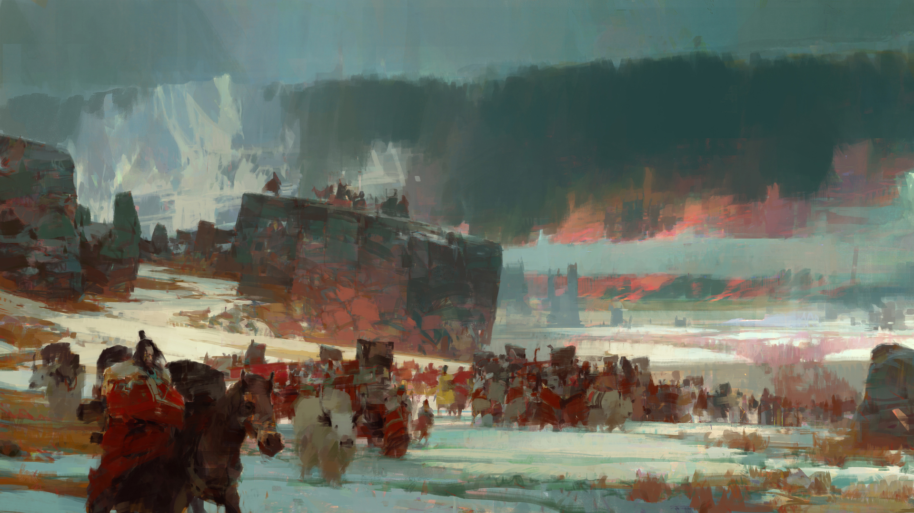

|
Ce este Zaruri & Balauri? |
- Acest website este un blog cu tematica jocurilor de masă. - Conține un scurt istoric despre jocul meu preferat "Dungeons and Dragons", alături de o serie de articole, noutăți, funcții și alte lucruri utile legate de joc. - Urmărește butonul de jos pentru a învăța istoria jocului Dungeons and Dragons. |